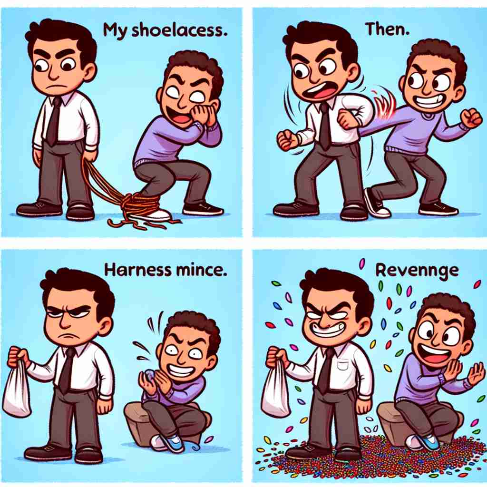

💬 He decided to take revenge on his opponent during the chess game. 他决定在棋局中报复他的对手。

💬 He decided to take revenge by pouring candies on his friend. 他决定通过往朋友身上倒糖果来报复。
💬 He decided to take revenge on his opponent during the chess game. 他决定在棋局中报复他的对手。
💬 He decided to take revenge by pouring candies on his friend. 他决定通过往朋友身上倒糖果来报复。
🧠 'Revenge' 的核心含义是为了报复而伤害他人。想象一个天平，一边是受到的伤害，另一边是报复的行为。这个平衡的概念贯穿了 'revenge' 的各种用法，无论是名词形式描述行为或欲望，还是动词形式表达采取行动，都围绕着这个核心意义。即使是作为感叹词使用时，也暗含着对过去失败的'报复'。通过这个形象化的天平概念，你可以更容易理解和记忆 'revenge' 的多重含义。
🔈 [rɪ'ven(d)ʒ]
🗝️ n./v. to hurt or harm someone in return for an injury or wrong done to oneself or others 为了报复别人对自己或他人所造成的伤害或错误而伤害他人。
🎭 在一个古老的村庄里，一个农夫的庄稼被邻居毁坏了。农夫心怀怒火，决定以同样的方式报复邻居。他趁夜深人静时毁坏了邻居的围篱，展示了'revenge'作为伤害某人以报复他人对自己的伤害的含义。
💬 He sought revenge for his brother's death. 他为兄弟的死寻求报仇。
🌳 由前缀 "re-"（再次）和词根 "venge"（惩罚）组成，表示为了报复而进行的惩罚或复仇行为。
💡 记忆 "revenge" 时，可以联想为 "repeat" 和 "vengeance" 的结合，即再次进行复仇或惩罚的行为。通过这种重复和惩罚的关联，更容易掌握其含义。
🗝️ n. the action of inflicting hurt or harm on someone for an injury or wrong suffered at their hands 对某人施加伤害或损害，以报复他们造成的伤害或错误的行为。
🎭 在一个法庭审判中，被告因故意破坏原告的财产而被定罪。原告要求判以严厉的惩罚，希望以此来实现对被告的'revenge'，体现了'revenge'作为为所受的伤害或错误实施伤害或伤害的行为。
💬 The attack was in revenge for the murder of their leader. 袭击是为了报复他们领导人的谋杀。
🤔 核心含义的名词形式
🗝️ n. the desire to inflict retribution 报复的渴望
🎭 在一个高中里，一位学生因遭受霸凌而心生报复之心。他在日记中写道：'总有一天，我要让他们付出代价。'这表现了'revenge'作为一种希望施加报应的欲望。
💬 Revenge burned in her heart after the betrayal. 背叛后复仇的火焰在她心中燃烧。
🤔 从行为延伸到内心的欲望
🗝️ v. to take vengeance for (a wrong or injury) 为（某种错误或伤害）复仇
🎭 在一个侦探小说中，主人公调查导致家人受伤的犯罪团伙，并发誓要'revenge'这一不公，为他们所受的伤害复仇。这展示了'revenge'作为对某种错误或伤害进行报复的含义。
💬 He was determined to revenge his friend's defeat. 他决心为朋友的失败报仇。
🤔 核心含义的动词形式
🗝️ v. to retaliate against (a person) 对（某人）进行报复
🎭 在一个激烈的篮球比赛中，当一名球员被对方恶意犯规后，他在下一场比赛中用精彩的表现'revenge'对手，展现'revenge'作为对某人实施报复的含义。
💬 She vowed to revenge herself on her ex-boyfriend. 她发誓要报复她的前男友。
🤔 将报复行为具体化为针对某人
🗝️ exclamation used to express good wishes to someone beginning a new venture 用于向开始新事业的人表达祝愿
🎭 在一个温馨的离别派对上，一位朋友抱着即将出国留学的伙伴说：'祝你好运，revenge!'这是一种诙谐的表达方式，象征着对新旅程的美好祝愿。
💬 You failed last time, but this time, revenge! 你上次失败了，但这次，复仇！
🤔 源自法语，表示祝愿某人在新的冒险中成功，暗含对过去失败的'报复'